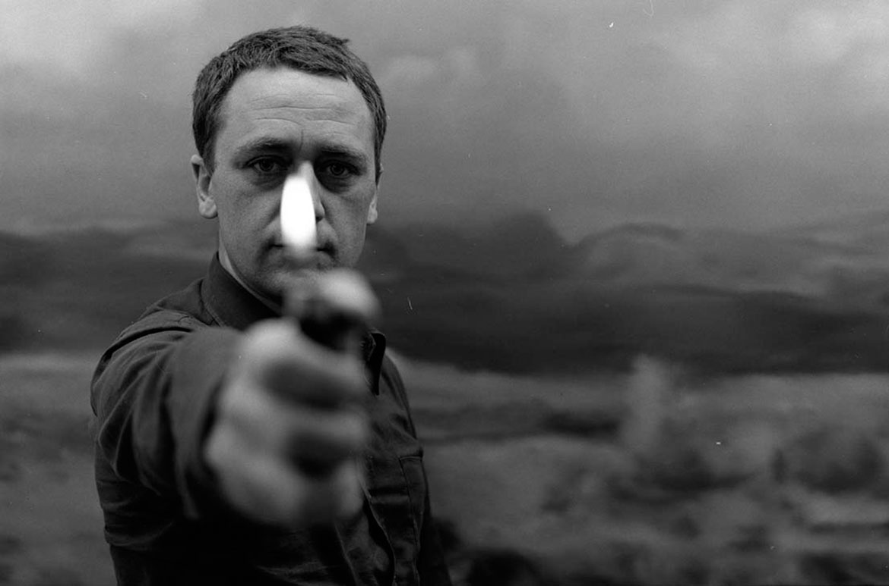

Gerhard Richter

Gerhard Richter, 1970 © Gerhard Richter 2017 (image courtesy of QAGOMA)
Gerhard Richter's lifelong experimentation with diverse subjects and methods — and his sophisticated questioning of their meanings — derives in part from his personal experience of modern Germany's tumultuous history. Richter's childhood coincided almost precisely with the rise and fall of the Third Reich; born in Dresden in 1932, just one year before Adolf Hitler came to power, Richter began his artistic career twenty years later within the academic system of East Germany. Richter trained as a muralist, painting realistic imagery that espoused socialist themes.
His success within the East German academy led to opportunities for travel, and in 1959 Richter saw documenta II, an exhibition in Kassel, West Germany, where he encountered the work of Jackson Pollock and Lucio Fontana, an Italian gestural abstractionist. "I was enormously impressed by Pollock and Fontana," Richter later recalled. "I might almost say that those paintings were the real reason I left the [German Democratic Republic]. I realized something was wrong with my whole way of thinking." Newly exposed to broader possibilities for painting, Richter assimilated from these artists an all-over approach to abstraction, a heightened sensitivity to surface, and a process-oriented technique.
In 1961, shortly before the Berlin Wall was built, Richter left East Germany and settled in Düsseldorf. During the 1960s Düsseldorf was the center of a burgeoning art scene, energized by various strains of international art, including Pop, Fluxus, and Happenings, all of which animated Richter's interest in photographic imagery. In 1962 Richter painted Tisch (Table), which he considers to be his first mature artistic statement. This painting began as a realistic composition based on a photographic image, but Richter disrupted the image with bold, if oddly anti-expressionistic, gestural brushwork. The result is a contradiction of artistic manners, a statement about the conflict between photography, realism, and abstraction. Richter has since been driven by a constant need to test the reliability of both painted and photomechanical imagery, oscillating between photo-based pictures and outright abstractions throughout his oeuvre.
Be it a rural landscape, a colorful gestural abstraction, or a black-and-white painting based on a family snapshot or image from the newspaper, a certain set of tensions consistently drives Richter's work: belief versus skepticism, gesture versus erasure, planning versus chance, personal engagement versus objective neutrality. In Richter's paintings one can identify many of the marks, methods, and forms that have driven the development of modern and contemporary art since the 1950s. But the often discordant way in which the artist brings them together on the canvas cools their rhetorical intensity. The restless quality of these works, in which different modes of painting collide, reflects Richter's simultaneous hope and uncertainty that painting can faithfully assess contemporary reality.